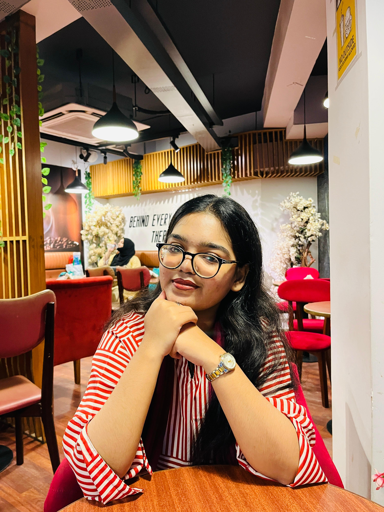

Introduction
Who I Am
Hello! I am Umma Tasfia Rahman Mithila, a Computer Science & Engineering student at CCN-UST Campus. I enjoy crafting responsive mobile apps, structuring databases, and exploring smart hardware-software systems with a calm, aesthetic touch.
My Passion & Vision
My core passion lies in turning logical problem-solving into clean software and thoughtful visual design—where structured code meets human-friendly aesthetics.

About Me
Lost Between Pages (Reading Books)
Reading books is my favorite quiet escape. Stepping into a well-written story or thoughtful non-fiction slows down noisy days, sharpens imagination, and leaves behind fresh perspectives that subtly shape how I think and create.
Study & Academic Curiosity
Beyond class notes, I am naturally drawn to understanding how things work under the hood—whether that means tracing data flow across networks, modeling clean database relationships, or exploring how hardware logic and software decisions connect in real systems.
Thoughtful Expression
I appreciate clarity, structured reasoning, and gentle visual harmony—whether I am organizing a technical layout, expressing ideas in discussion, or designing a clean interface.
Education
B.Sc. in Computer Science & Engineering
CCN University of Science & Technology (CCN-UST)
2024 – Present
Higher Secondary / College
Cumilla Residential College, Cumilla
2021 – 2023
High School
Cumilla Modern High School, Cumilla
2016 – 2021
Expertise
Programming & Development
Experience in C, C++, Java, and Python along with structured problem-solving and clean static web layouts.
Databases & Cloud
Designing ER diagrams, relational database schemas, SQL queries, and Firebase / Cloud Firestore integrations.
Networking & Systems
Working with Cisco Packet Tracer, redundant network topologies (STP & EtherChannel), and core CS fundamentals.
Visual & UI Aesthetics
Creating soft, balanced visual layouts, photo retouching, and cohesive color-matched designs.
Projects
ClubNest
A mobile club management application built with Firebase, Cloud Firestore, and Google Auth Platform.
Campus Asset Hunter
A university designer-recruitment web platform featuring ER diagrams, relational schemas, and project documentation.
GizmoSphere
A structured database management system project focused on organized data handling and queries.
STP & EtherChannel Network
Redundant network architecture simulation in Cisco Packet Tracer alongside inter-campus communication setups.
Find Me Online
Connect with me on LinkedIn, explore my repositories on GitHub, or reach out directly via email.